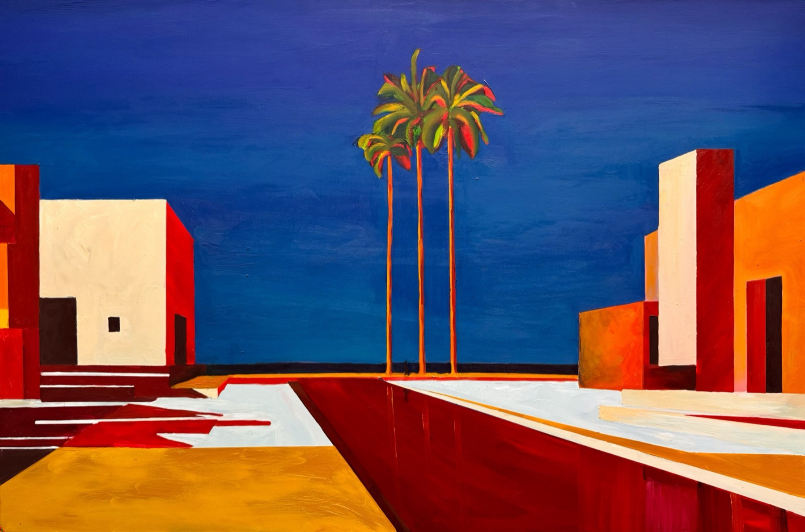
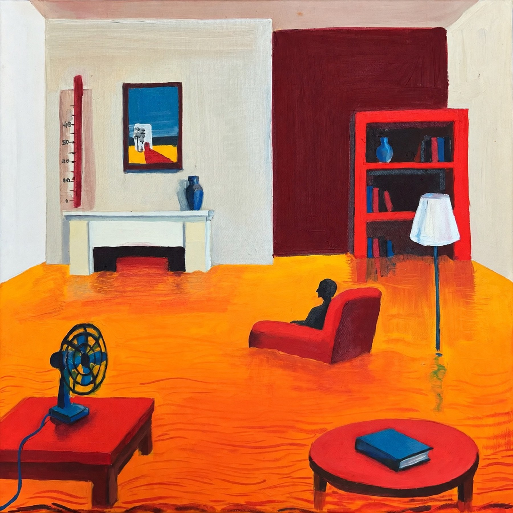
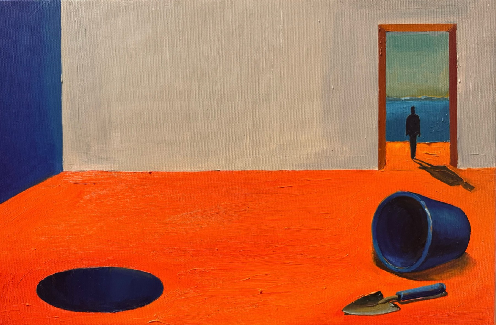
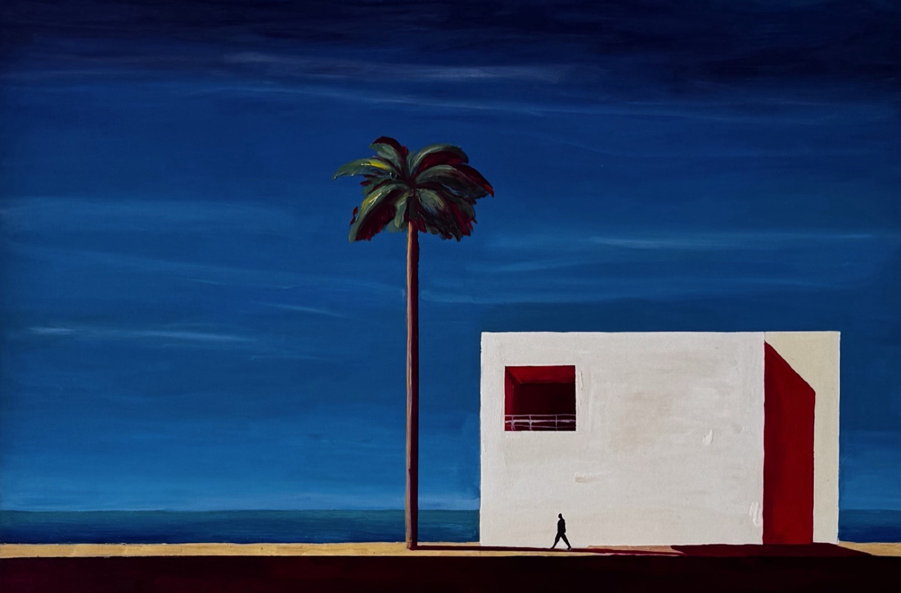
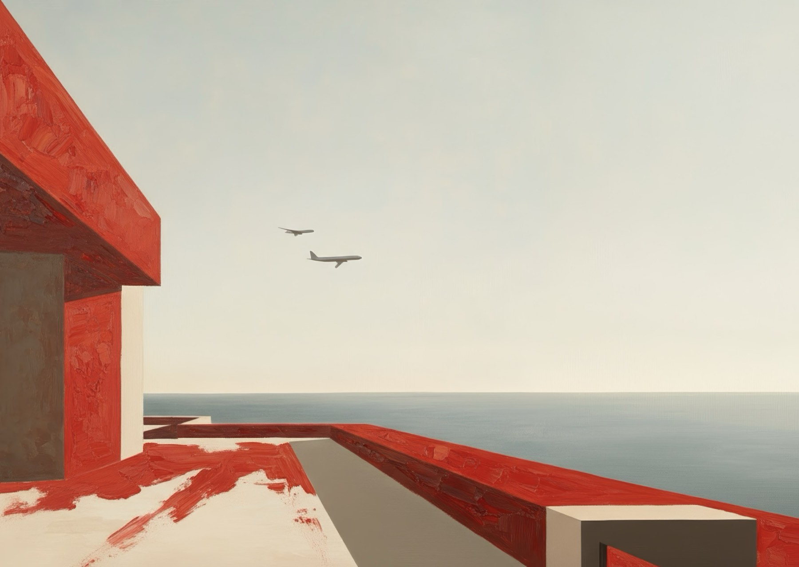
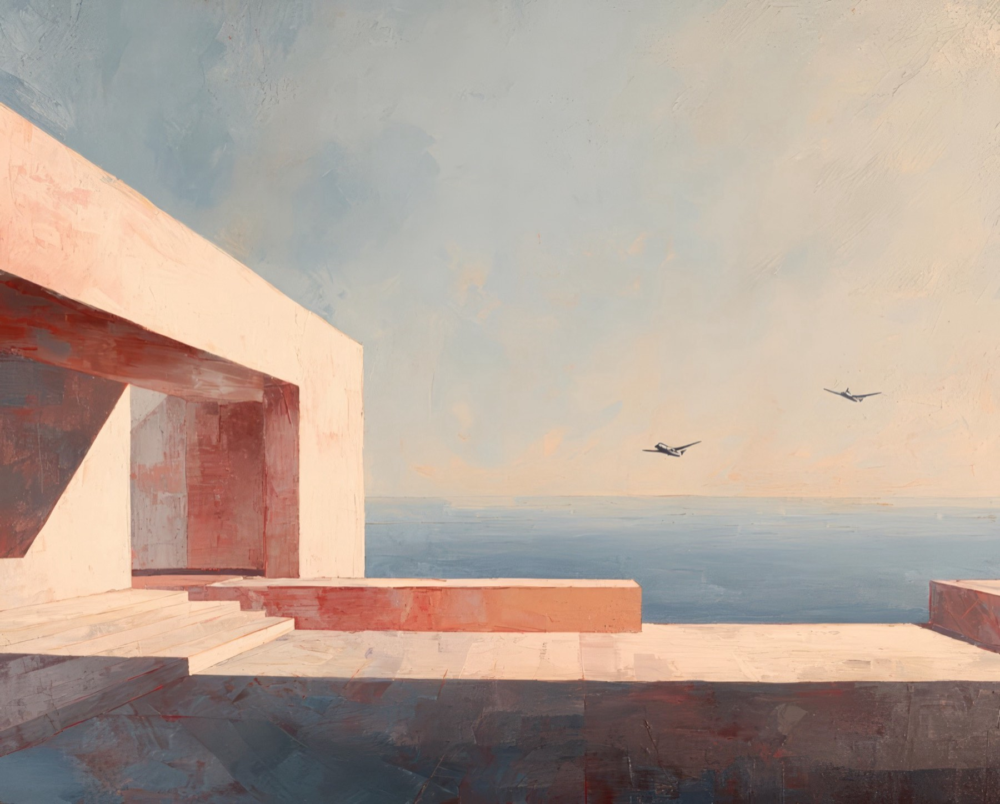
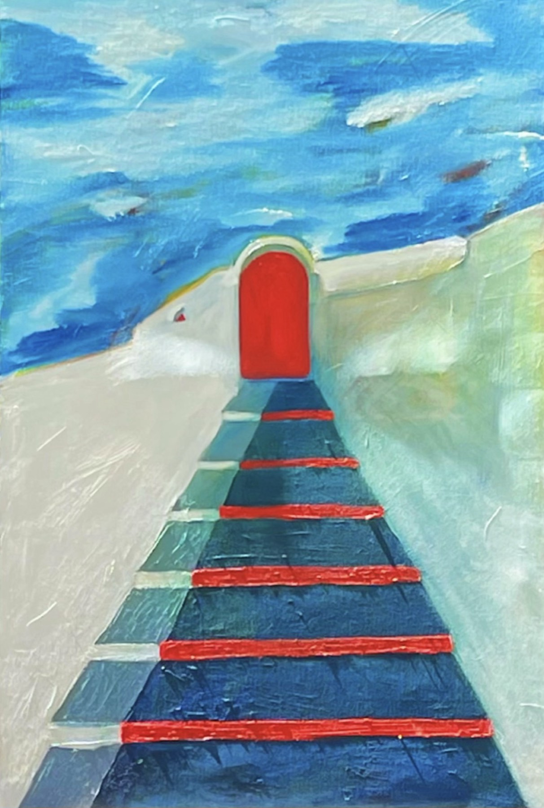

paintings · 2021–2026 · oil on canvas · 13 paintings
Nothing Significant
Happens Here
Nothing Significant Happens Here is a series about waiting: the moment when, on the surface, nothing takes place.
The paintings return to a few situations: a doorway, an empty road, a shoreline, and one small figure. None of these places is real. Katsur assembles them from fragments of cities she has lived in, so they feel familiar without belonging anywhere.
The figure is small and almost always alone. Where it stands matters more than who it is.
Red returns in almost every painting: a door, a shadow, a strip of floor. It reads as a signal, sometimes a warning, sometimes an invitation.
The series does not say what happens next.

oil on canvas · 90 × 120 cm

oil on canvas · 120 × 90 cm

oil on canvas · 152 × 101 cm

oil on canvas · 90 × 120 cm

oil on canvas · 40 × 40 cm

oil on canvas · 60 × 40 cm

oil on canvas · 90 × 120 cm

oil on canvas · 152 × 101 cm

oil on canvas · 70 × 100 cm

oil on canvas · 152 × 101 cm


oil on canvas · 100 × 90 cm

oil on canvas · 140 × 100 cm

oil on canvas · 60 × 90 cm